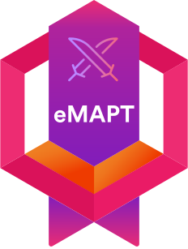

Turgut Aghashov
OSWE & OSCP Certified
turguta@umd.edu | (227) 229-6454
Security engineer with 2+ years of penetration testing and vulnerability research across banking, government, and telecom. Specialized in web application security, cloud assessments, and reverse engineering, identified 250+ critical findings and delivered remediation guidance across web, mobile, and infrastructure targets.
Certifications

OffSec Web Expert (OSWE)
OffSec | Oct 2024

OffSec Certified Professional (OSCP)
OffSec | Nov 2023

Mobile App Penetration Tester (eMAPT)
INE | Feb 2024
Tools & Skills
Programming & Scripting
- Python, C, C++, Go, Bash, JavaScript, Java, PHP, SQL
- Scripting, exploit development, secure code review
Security
- Penetration Testing (Web, Mobile, Network), API testing, fuzzing
- Secure code review, DevSecOps, binary exploitation, reverse engineering
Cloud & Infrastructure
- AWS (EC2, VPC, RDS, S3, ELB, ASG, CloudFormation, Route53, Lambda, CloudWatch)
- GCP, Azure
- Docker, Kubernetes, Ansible, GitHub Actions
Tools
- Burp Suite, OWASP ZAP, Metasploit, Nmap, Wireshark, MobSF, Frida, JADX
- Ghidra, GDB, Pwntools, Nessus, Splunk, Elastic Stack
Education
University of Maryland, College Park, MD, USA
Professional Master of Engineering | Cybersecurity Engineering
- Relevant coursework: Hacking of C programs and Unix binaries, Networks and Protocols, Cloud Computing, Advanced Hacking of Linux, Network Security, Business of Engineering, Reverse Engineering, Fundamentals of AI and Deep Learning, Intro to Secure Coding, Secure Operating Systems.
- GPA: 3.9/4.0
Aug 2024 - Dec 2025
Baku Higher Oil School, Baku, Azerbaijan
Bachelor of Engineering with Honors | Information Security
- Relevant coursework: Web Programming and Security, Mobile Programming and Security, Database Administration and Security, Network Security, Data Structures and Algorithms.
- Delivered Red Team training sessions for junior students in Cyber Club.
- GPA: 95.57/100
Sep 2019 - Jul 2024
Experience
Security Engineering Intern
Bureau Veritas Cybersecurity - Seattle, WA, USA
- Identified 150+ security flaws through advanced web and cloud penetration testing in lab environments.
- Assessed 3 enterprise web/infrastructure systems, uncovering critical misconfigurations and producing remediation reports.
Jun 2025 - Aug 2025
Leading Penetration Testing Specialist
Cyberpoint LLC - Baku, Azerbaijan
- Executed black-, gray-, and white-box penetration tests for 5 banks, 2 state agencies, and 2 telecoms.
- Exposed 100+ vulnerabilities, including OWASP Top 10, preventing potential data exposure risk for millions of users.
Dec 2023 - Aug 2024
Junior Cyber Research and Assessment Specialist
Prosol CJSC - Baku, Azerbaijan
- Conducted web, mobile, and infrastructure penetration tests across 4 banks and 2 enterprises.
- Traced and analyzed 5 phishing campaigns targeting government agencies, recommending defensive measures.
Aug 2022 - Nov 2023
Publications
Building an Effective Security Operation Center with Open-Source Tools
T. Aghashov and N. Najafli
4th International Scientific Conference of Students and Young Researchers, Baku Higher Oil School
- Surveyed and compared open-source SIEM, IDS, and log-analysis tools, designing a reference SOC architecture for SMEs.
- Analyzed trade-offs versus commercial SOC stacks and produced practical deployment guidelines for cost-effective monitoring and incident response.
Apr 2023 - May 2023
Research Experience
RefProbe: Hunting Kernel Lifetime Bugs with eBPF
Internship Research - Bureau Veritas Cybersecurity North America
- Built an eBPF-based tool to detect Linux kernel lifetime bugs (use-after-free, double-free).
- Developed test kernel modules to inject controlled bugs and measure detection coverage and false positives.
Jul 2025 - Aug 2025
Mobile Security Ecosystem and Penetration Testing
Undergraduate Thesis Research - Baku Higher Oil School
- Performed end-to-end penetration testing of an intentionally vulnerable Android banking app using static and dynamic analysis (MobSF, Frida, Drozer, Burp Suite).
- Mapped findings to OWASP Mobile Top 10 and proposed concrete remediation steps, demonstrating how systematic pentesting hardens real-world mobile apps.
Feb 2024 - May 2024
Course Projects
Man-in-the-Middle Attacks on the Southbound Interface in SDN
ENPM 693: Network Security
- Built a CORE + Ryu-based SDN testbed to emulate controller-switch communication over OpenFlow.
- Implemented ARP-spoofing and traffic-relay attacks to intercept and modify southbound traffic in real time.
- Evaluated detection and mitigation strategies using flow-rule validation, anomaly monitoring, and controller-side checks.
Secure AWS Cloud Architecture
ENPM 818N: Cloud Computing
- Designed a multi-AZ VPC with public/private subnets, NAT gateways, and an Application Load Balancer fronting autoscaling web servers and MariaDB.
- Hardened the perimeter using AWS WAF, Shield, ACM, Route 53, ALB, and VPC flow logs to an S3 log bucket.
- Optimized static asset delivery via CloudFront + S3, reducing attack surface while improving performance and reliability.
UMDiet: Secure Go Web Application
ENPM 680: Intro to Secure Coding
- Implemented Go-based diet-tracking and planning app with authenticated endpoints and server-side validation.
- Used modular APIs, Git workflows, and reviews to mirror secure development practices.
Multi-Agent Pathfinding Planner
ENPM 703: Fundamentals of AI and Deep Learning
- Built a multi-robot pathfinding environment on grid-based graphs using A* as the baseline single-agent planner.
- Designed a Deep Q-Learning-based policy that incorporates other agents' locations and baseline routes to adapt paths and speeds for collision avoidance.
- Evaluated learned policies against traditional planners using collision counts, path deviations, and visualizations of agent trajectories over time.
GDB Ghidra Pseudocode Integration
gdb_ghpseudo
- Integrates Ghidra pseudocode into gdb/pwndbg sessions via a headless Ghidra server workflow.
- Provides a 'ghpseudo' gdb command to pull synchronized decompiler output while stepping through binaries.
- Includes setup instructions (.gdbinit, headless Ghidra server) and sample usage for faster reversing.
Awards
1st Place, Recyclaton 2022 Hackathon
The Coca-Cola Foundation and ASAN Services
- Won first place with the "Replay" team within the "World Without Waste" program.
- Awarded 6,000 AZN (~$3,500) as an investment for the idea.
Dec 2022
Presidential Scholarship Recipient
Government of Azerbaijan
- Awarded full scholarship for scoring 689.4/700 on the national university entrance exam (ranked 4th nationwide).
Sep 2019
Golden Medal for Excellency
Ministry of Science and Education of the Republic of Azerbaijan
- Awarded for excellence during school years.
Jun 2019
Bronze Medal, Republican Math Olympiads
Ministry of Science and Education of the Republic of Azerbaijan
- Secured 3rd place at the national math Olympiad.
May 2019
Activities
Math Coach
Math Success Program, University of Maryland
- Tutored MATH120/140/113/141 students in precalculus and calculus problem-solving.
- Simplified concepts and exam-style questions to build confidence and knowledge.
Oct 2025 - Dec 2025
Assistant Lecturer
Azerbaijan Cyber Security Organizations Association
- Tutored 30 students on key concepts and practical applications in cryptography.
Jun 2023 - Jul 2023
Interests
Security research, CTFs, and continuous learning in application, cloud, and kernel security.Chess, soccer, basketball, volleyball, books and nature.
Family and Friends.